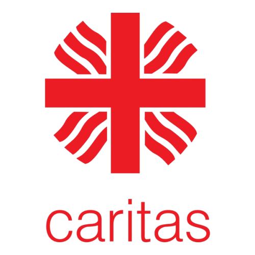
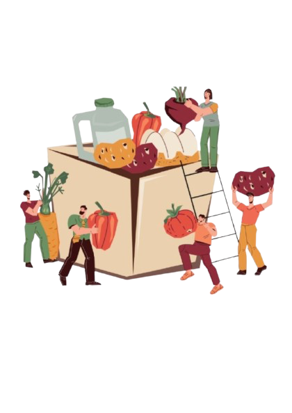

Crescere Insieme
Scopri tutti gli appuntamenti settimanali e le iniziative speciali del nostro Oratorio.
Ogni Venerdì in Oratorio
15:00 — 17:00
Spazio Compiti
Uno spazio per leggere, studiare, fare i compiti e disegnare in compagnia. Aperto a tutti i ragazzi dalle elementari alle medie.
Catechismo
14:30 — 15:30
2° Gruppo
15:00 — 16:00
4° Gruppo
15:45 — 16:45
1° Gruppo
16:00 — 17:00
3° Gruppo
Momenti di Comunità
Queste attività hanno date variabili. Consulta il calendario per i prossimi appuntamenti!
Aiutaci ad Aiutare
Ogni primo weekend del mese raccogliamo alimenti per le famiglie in difficoltà.


Dove e Quando
Chiesa di Argine
Domenica: 08:40 - 09:00
Chiesa di Bressana
Sabato: 16:40 - 17:00
Domenica: 09:40 - 10:00
Cosa Raccogliamo
- Latte UHT, Zucchero, Olio
- Pasta, Riso, Sughi, Legumi
- Biscotti, Merendine, Marmellata
- Tonno e Carne in scatola
- Crackers, Pane in cassetta, Caffè
- Formaggi e preparati in scatola